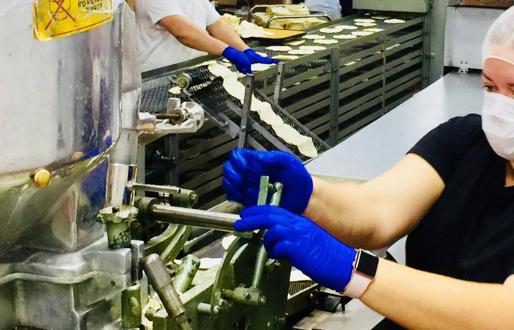
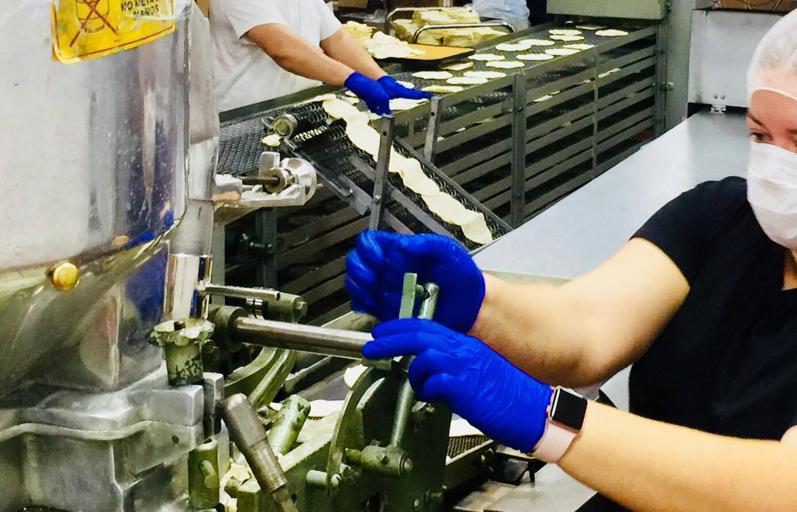
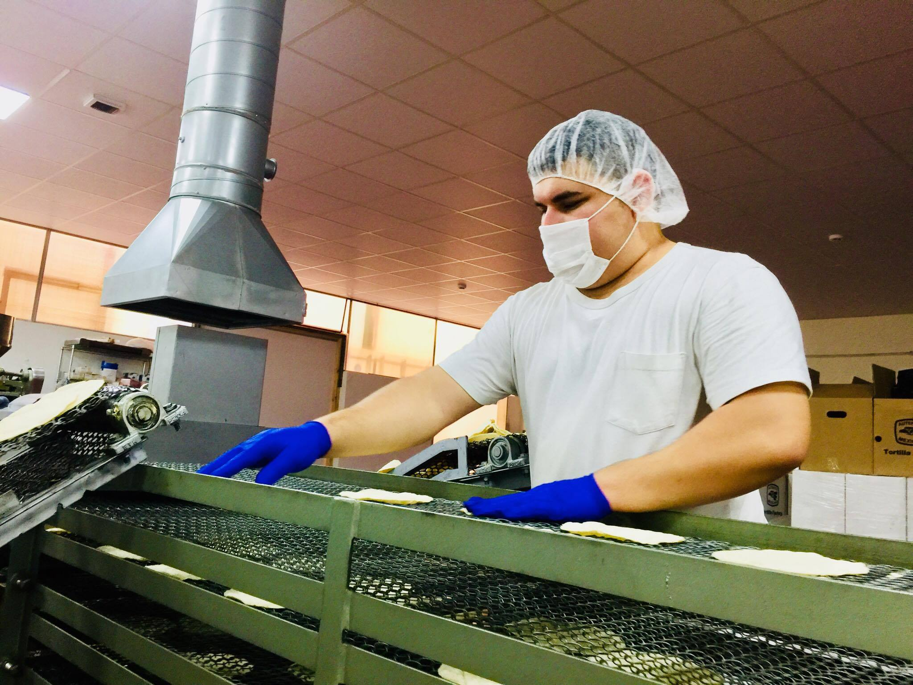
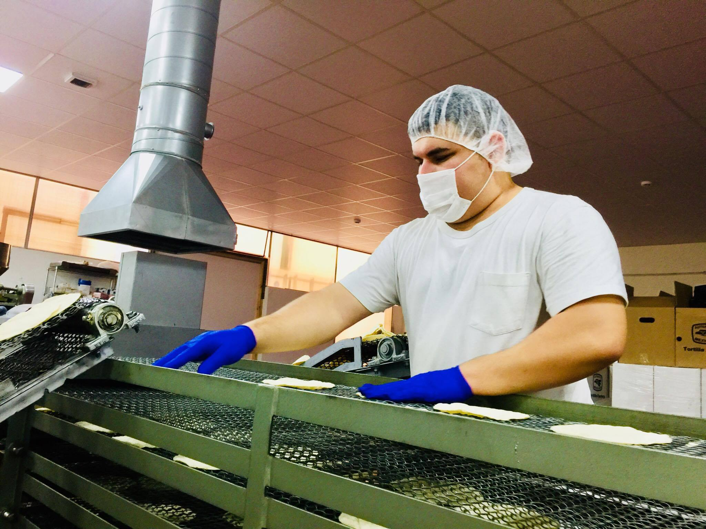
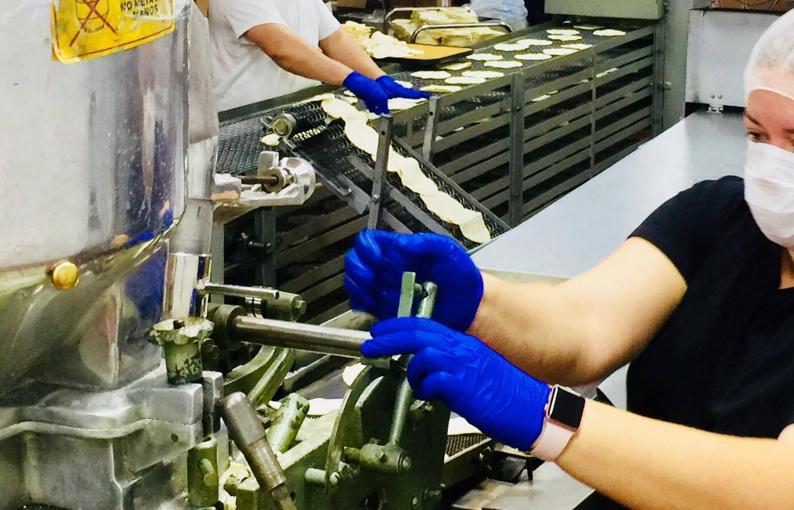
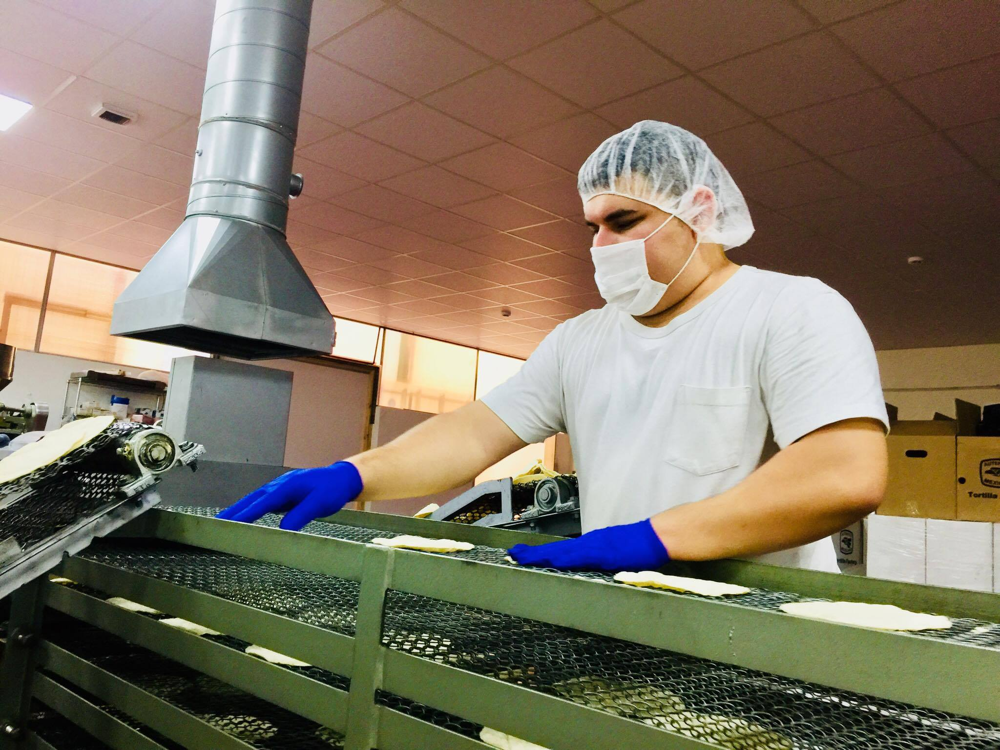

 

Tortilla Factory is a company that produces white and blue corn tortillas in Europe.
This, by using traditional
machines, Mexican goods and corn flour (made with native Mexican corn-non gmo) to make THE authentic
tortilla.
Taste doesn't lie
Our products are made with organic corn (NON-GMO certified) and has had the Nixtamalization process that Mayans and Aztecs
invented thousands of years ago.
The corn is soaked and cooked in an alkaline solution, usually limewater,
so the germs and hard outer hull from the kernels are removed.
Some of the corn oil is broken down
into emulsifying agents, while bonding of the corn proteins to each other is also facilitated.
Nixtamalized
corn has several benefits over unprocessed grain for food preparation: it is more easily ground;
its nutritional value is increased; flavor and aroma are improved. Corn is our staple in Mexican
food and Corn Tortillas are our plate, our fork, our indigenous root and part of our identity.


C/ Camp De Turia 6 46970 - (Alaquas) - Valencia
tortillafactoryspain@gmail.com
Phone: +34 619 60 62 96